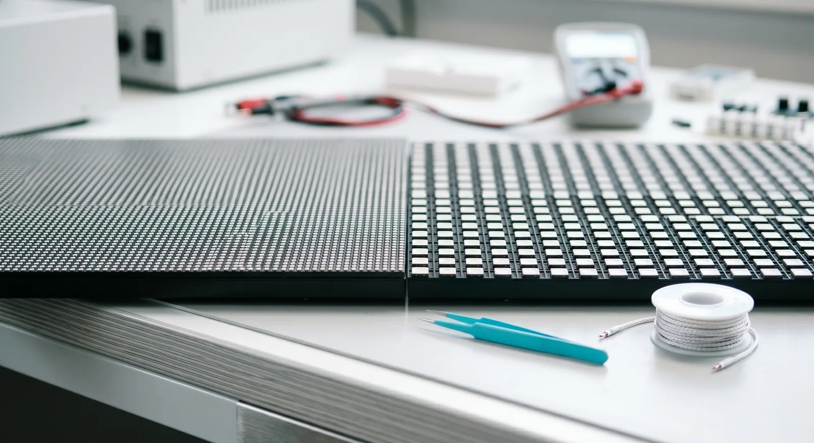

The closest your camera ever gets to the wall sets the pixel pitch you need. Everything else about the spec follows from that one distance. Get it wrong and the grid shows up in frame; get it right and the background reads as a place.
Cineva by Apex Sound & Light specs pitch from the tightest shot on the board, not the average one. One push-in to a drivable interior can move you from a coarse panel to a fine one, so we ask for the closest lens-to-wall distance before we quote a wall. That is also why we spec it on a walkthrough, not over the phone. A spec sheet read down a phone line cannot see your camera, your closest mark, or how soft you plan to run the background, and those three things decide the panel.
What pitch buys
Pixel pitch is the distance between LEDs, measured in millimetres. A 2.6mm panel packs them tightest, then 2.84mm, then 2.9mm, then 3.9mm. The finer the pitch, the closer your lens can sit before individual pixels resolve as a grid. Our ROE Black Pearl BP2 V2 sits at 2.84mm, fine enough to hold up when the camera works in close. A 3.9mm panel spreads the same LEDs wider, which costs less per square metre but pushes your minimum clean distance back.
Think of it as a clean working range rather than a single number. Each pitch has a distance at which the grid stops resolving and the wall becomes an image. Past that distance every panel here looks the same in camera. Inside it, the finer panel keeps reading as a place while the coarser one starts to show its structure. The whole game is matching that range to where your camera actually lives.
None of these numbers is a quality grade on its own. A 3.9mm wall is not a worse wall. It is a wall built for a different distance. The right pitch is the one that stays invisible at the closest range your shot demands, and the wrong pitch is the one you bought for a distance you will never shoot.

Moiré and focus
Moiré is the shimmer you get when the wall's grid and the sensor's grid fight each other. It shows up most when a fine, regular pattern lands near the resolving limit of the lens, which is exactly what a too-coarse pitch does at close range. The fix is not always a finer panel. Often it is distance, focus, and a small framing change.
Depth of field is the tool most crews forget they already have. Throw the background a stop or two soft and the grid disappears before the pixels ever resolve. A wall that would moiré in deep focus reads clean the moment you open up and let it fall off. So the question is never just the pitch. It is the pitch, the distance, and how much of the wall you actually hold sharp.
This matters for budgeting as much as for the look. If the plan is a long lens with the background well soft, a coarser panel can carry the shot the finer one would have carried, and the savings are real. If the plan is a wide lens holding the wall crisp behind a foreground that moves, you need the pitch that survives close and sharp. We would rather know which one it is before we quote than fix it on the day.
When coarser wins
Sometimes the coarser panel is the smart call. If the wall only ever sits far back and soft, a window of sky behind a desk, a city at night beyond a balcony, a 3.9mm build does the job and frees budget for more coverage. You buy fine pitch to bring the camera close. If the camera never comes close, you are paying for headroom the shot will never use.
The same logic runs the other way. A drivable car interior, a reflective surface that has to pick up the scene, a tight two-shot against a window the lens holds sharp: those are where the finer pitch earns every dollar, because the camera lives inside the working range where the coarser panel would break. Spend the budget where the camera goes close, save it where the wall stays back. The board tells you which is which long before we do.
The clean line is this: the closest lens decides the pitch. Hand us the tightest framing, the focal length, and how soft you want the background, and the right panel falls out of the answer. There is no universal best pitch, only the one that disappears at your closest range.